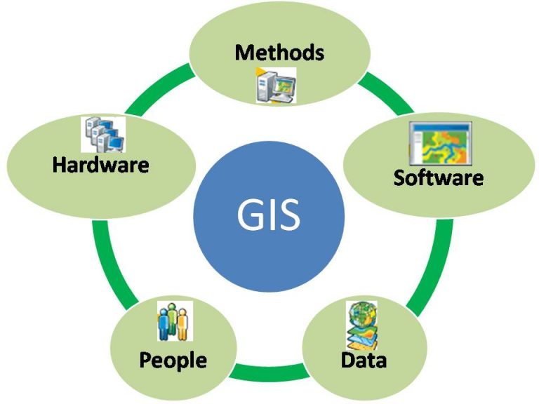
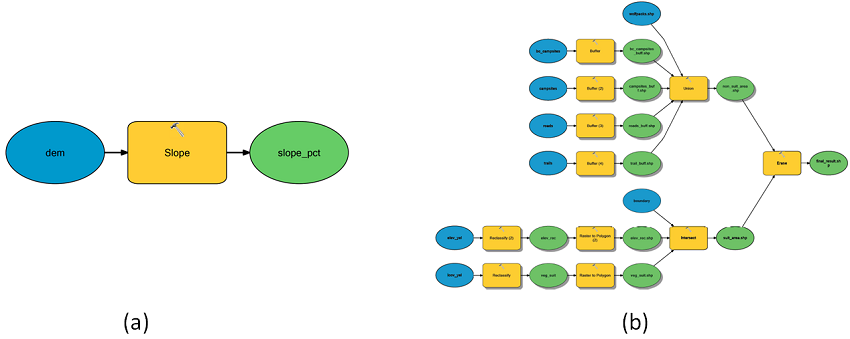
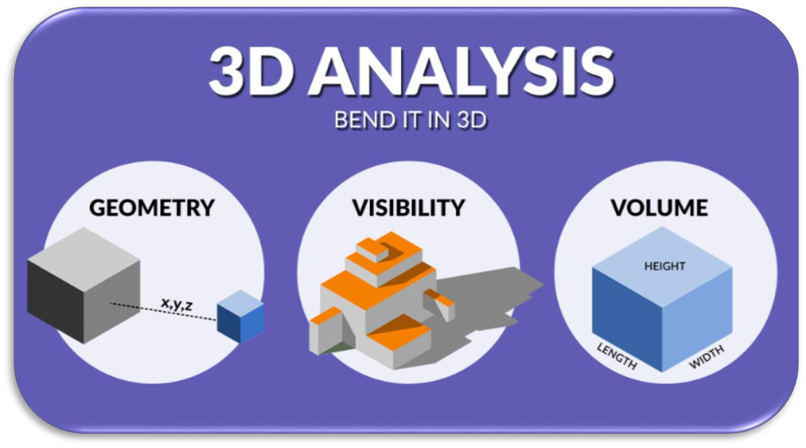
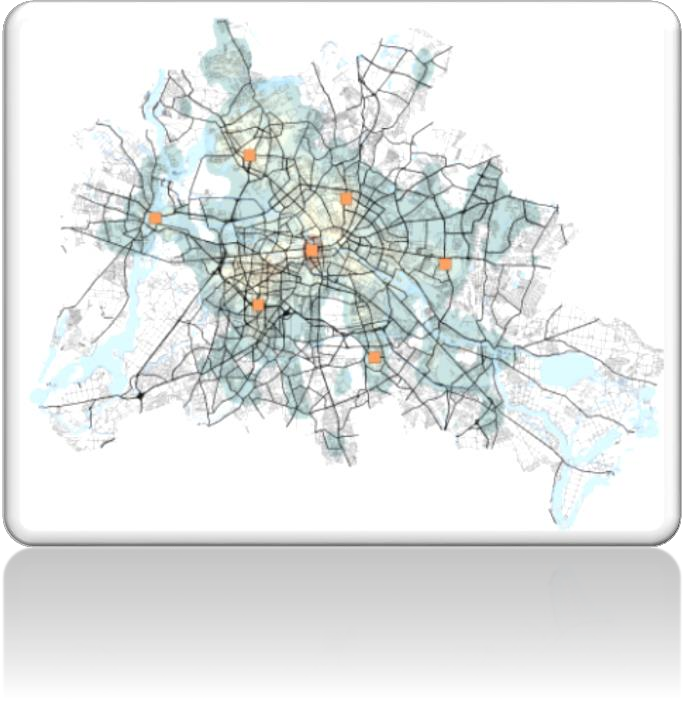
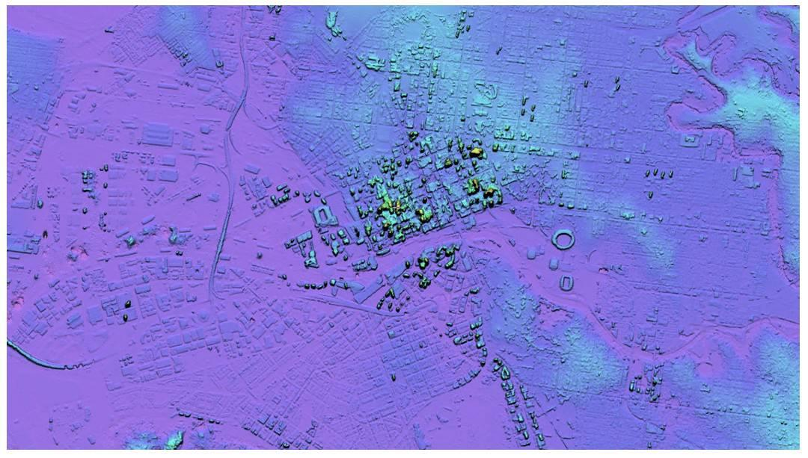
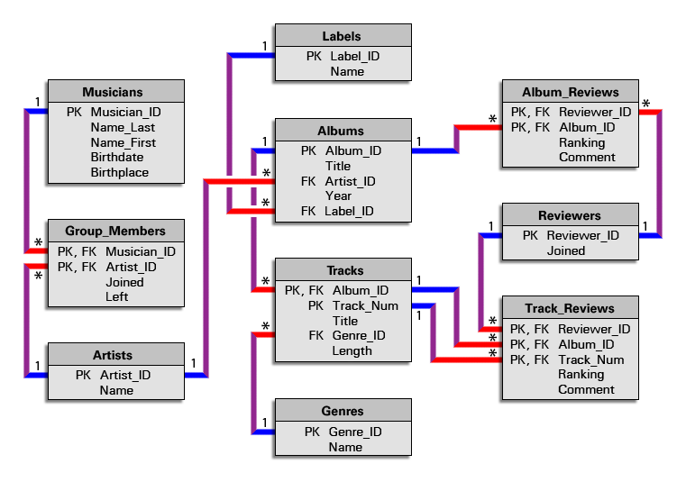

نظم المعلومات الجغرافية (GIS)
نظم المعلومات الجغرافية • التحليل والنمذجة الجيومكانية
تُعد النمذجة المكانية أداة هامة لإجراء التحليل الجيومكاني لفهم العالم وتوجيه عملية صنع القرار. في نظم المعلومات الجغرافية (GIS)، تعتبر النماذج المكانية لغات رسمية للتعبير عن آليات العمليات الجغرافية وتصميم سير العمل التحليلي لفهم هذه العمليات. مع تطور نظم المعلومات الجغرافية وعلوم الحاسوب، أصبحت أنواع مختلفة من النماذج المكانية وتقنيات النمذجة متاحة، مما يمنح مصطلح "النموذج المكاني" معاني مختلفة.
نظم المعلومات الجغرافية • التحليل ثلاثي الأبعاد
يوفر امتداد ArcGIS 3D Analyst أدوات لإنجاز عمل قوي مع بيانات نظم المعلومات الجغرافية في سياق ثلاثي الأبعاد. يتيح لك إنشاء وإجراء تحليل ثلاثي الأبعاد باستخدام العديد من أنواع البيانات ثلاثية الأبعاد، مثل النقاط ثلاثية الأبعاد، والخطوط ثلاثية الأبعاد، والمضلعات ثلاثية الأبعاد، وسحب النقاط، والمسارات المتعددة، وشبكات TIN، ومجموعات بيانات التضاريس، وصور الراستر. يمكنك إنشاء واستيراد وتحويل البيانات ثلاثية الأبعاد بين تنسيقات مختلفة، وتحليل الأسطح وبيانات المعالم ثلاثية الأبعاد معًا لفهم بيئتك بشكل أفضل في سياق ثلاثي الأبعاد.
مقاييس التحليل ثلاثي الأبعاد:
نظم المعلومات الجغرافية تحليل الشبكات
يتكون تحليل الشبكات من مجموعة من تقنيات التحليل المستخدمة مع الشبكات. باستخدام الشبكات الهندسية، يمكنك فهم كيفية تدفق أي شيء داخلها. تحكم القواعد كيفية تحرك الكائنات عبر الشبكة. يتبع كل نوع من التحليل هذه القواعد، مما يؤثر على نتيجة المسار أو النتيجة المختارة.
- المسار (Route)
- أقرب منشأة (Closest facility)
- مناطق الخدمة (Service areas)
- مصفوفة تكلفة المنشأ والوجهة (OD cost matrix)
- مشكلة توجيه المركبات (Vehicle routing problem)
- تخصيص المواقع (Location-allocation)
- التحليل المعتمد على الوقت (Time-dependent analysis)
اختيار الموقع الأمثل
يأخذ اختيار الموقع الأمثل في الاعتبار الطلب لتحديد أفضل موقع بالنظر إلى عدة منشآت. على سبيل المثال، يمكن أن يساعد في تحديد مكان بناء مستشفيات جديدة اعتمادًا على المستشفيات الحالية والطلب المتاح. تخصيص المواقع - تساعد أداة تحليل الشبكة هذه أصحاب الأعمال في تحديد الموقع الأمثل لمتجرهم. يمكنها أيضًا المقارنة مع المتاجر المنافسة لاستهداف الحصة السوقية.
نظم المعلومات الجغرافية • جمع البيانات وتكاملها
يوفر "جمع البيانات وتكاملها" تقنيات شاملة لجمع البيانات من مصادر متنوعة، بما في ذلك الملفات، وقواعد البيانات العلائقية، وصفحات الويب، وواجهات برمجة التطبيقات (APIs).
- "جمع البيانات من الملفات": التعامل مع تنسيقات الملفات المختلفة، مثل txt، csv، json، xml، html، والمزيد، لجمع البيانات بشكل فعال. ستتعلم كيفية قراءة وتحليل واستخراج البيانات ذات الصلة من أنواع الملفات المختلفة، مما يمكنك من جمع معلومات قيمة من مصادر متنوعة.
- "جمع البيانات من الويب": استخلاص البيانات من تنسيقات صفحات الويب المختلفة باستخدام مكتبات بايثون.
- "جمع البيانات من واجهات برمجة التطبيقات (APIs)": التفاعل مع مختلف المواقع التي توفر واجهات برمجة التطبيقات (APIs).
- "تكامل البيانات": تقنيات ومنهجيات لدمج البيانات المجمعة من مصادر مختلفة. كيفية دمج وضم مجموعات البيانات، والتعامل مع عدم اتساق البيانات، وإنشاء مجموعة بيانات موحدة لمزيد من التحليل واتخاذ القرار.
نظم المعلومات الجغرافية استخلاص نموذج الارتفاع الرقمي (DEM)
نموذج الارتفاع الرقمي (DEM) هو شبكة راستر منتظمة التباعد من قيم الارتفاع لسطح التضاريس. نستخدم نماذج الارتفاع الرقمي لإنتاج خرائط مثل الخرائط الكنتورية، وخرائط الأورثوفوتو (Orthophoto maps)، وخرائط المنظور. نستخدم نماذج الارتفاع الرقمي لتخطيط المسارات في بناء الطرق السريعة والسكك الحديدية. في الاستشعار عن بعد، تُستخدم نماذج الارتفاع الرقمي في رسم الخرائط، والتصحيح الأورثومتري (orthorectification)، وتصنيف الأراضي. نستخلص بيانات الارتفاع من الصور الجوية الممسوحة ضوئيًا أو الرقمية، أو من عمليات الالتقاط بالأقمار الصناعية أو الطائرات بدون طيار.
نظم المعلومات الجغرافية تصميم وتنفيذ قواعد البيانات المكانية
تطبيقات وبرمجيات نظم المعلومات الجغرافية
- Esri (Arc GIS online - Arc GIS Pro - Arc GIS Enterprise)
- تطبيقات الهاتف المحمول مفتوحة المصدر (جمع البيانات - Survey 1.2.3 - Navigator)
- لوحات التحكم (Dashboard)
- تطبيقات الهاتف المحمول (جمع البيانات - Survey 1.2.3 - Navigator)